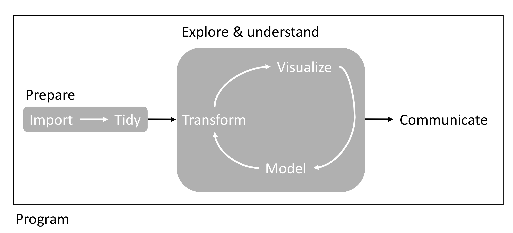

This syllabus provides the course information required by University Policy 4095 (Course Information Policy).
Whether you are reading this on the web or from a downloaded pdf, everything for this course is one click away:
| Course website (home / syllabus) | https://svenbuerki.github.io/EEB603_Reproducible_Science/index.html |
| Schedule and all due dates | https://svenbuerki.github.io/EEB603_Reproducible_Science/Timetable.html |
| Assignments and evaluation rubrics | https://svenbuerki.github.io/EEB603_Reproducible_Science/Assignments.html |
| Course chapters and teaching material | https://svenbuerki.github.io/EEB603_Reproducible_Science/Chapters.html |
| Additional resources | https://svenbuerki.github.io/EEB603_Reproducible_Science/Resources.html |
| Downloadable pdf of this syllabus | https://svenbuerki.github.io/EEB603_Reproducible_Science/index_syllabus_pdf.pdf |
| GitHub repository (source of everything) | https://github.com/svenbuerki/EEB603_Reproducible_Science |
If you forget your Bronco Card, contact Campus Security at 208-426-6911 to request access as a last resort.
Welcome to the course! I am looking forward to getting to know you this semester. To get started, please familiarize yourself with this syllabus and our website. I developed this course to provide a welcoming environment and effective learning experience for all students. If you encounter barriers in this course, please bring them to my attention so that I may work to address them, and reach out to me at any time if you have questions about course content or assignments.
This is an in-person course that will meet two times a week. Our class sessions include important information and opportunities to apply what you are learning with your peers. To best achieve the learning outcomes for the course, it is important that you attend class and be engaged with the content, me and each other. You should expect to spend approximately 9 hours each week on work for this course (including in and out of class time).
We take a short break in the middle of each session. Our classes run for 75 minutes, and roughly halfway through I will call a five-minute break. I aim for a natural pause in the material rather than a fixed time on the clock, so it may fall a little either side of the midpoint. Use it however you need: step out, stretch, get some air, look away from your screen. During the bioinformatics laboratories the break doubles as a checkpoint – before we stop, the teaching group and I will check that everyone’s code is running, so that nobody spends the second half of the session stuck on something we could have sorted out in a minute.
The course changes shape as it goes, and it is worth knowing this from the start:
This course is part of the Ecology, Evolution and Behavior (EEB) Ph.D. program at Boise State University, and is designed specifically for graduate students enrolled in that program and in Biological Sciences.
Graduate students from other programs are also welcome, and I regularly accept them: if your research involves gathering, managing, analyzing, or communicating data, the needs this course addresses are probably yours too. Please contact me and we will discuss whether it is a good fit for your project.
No prior experience with R, Markdown, or version control is assumed – the course builds these skills from the ground up.
The scientific community widely acknowledges that we are in the midst of a reproducibility crisis (e.g. Baker, 2016). This course begins by reviewing the evidence for, and causes of, this crisis, and aims to highlight key factors that can improve reproducibility in science—especially within Ecology, Evolution & Behavior. It also provides a platform to develop, practice, and strengthen science communication skills (e.g. Soltis et al., 2023 for some innovative ways to share your research).
The overarching goal of this course is to equip students with the theoretical knowledge and bioinformatics tools necessary to enhance transparency, reproducibility, and efficiency in scientific research. Throughout the course, students will learn to use open-source software for research, including R, RStudio and R Markdown (incl. knitr). To further develop these skills—and improve communication and teaching competencies—students will:
Overall, this course provides students with key knowledge to gather, store, share, prepare, and analyze data, as well as communicate results to the scientific community and various stakeholders (see Figure 7.1).

Figure 7.1: Overview of workflow studied in PART2.
After successful completion of this course, students will be able to:
Detailed, chapter-level learning outcomes are available on the course website.
This course supports the Ecology, Evolution and Behavior (EEB) Ph.D. program and the graduate programs in Biological Sciences by developing students’ capacity to conduct rigorous, transparent, and well-documented research, and to communicate that research effectively. These competencies underpin doctoral and thesis work directly: a dissertation chapter that cannot be reproduced cannot be defended, and the data management and version control practices taught here are the ones you will rely on across the whole of your degree. They also align with the University Learning Outcomes for graduate education.
The course is subdivided into three parts:
Part 1 provides students with key theoretical knowledge on reproducible science, enabling them to design and implement a reproducible approach tailored to Ecology, Evolution & Behavior. This section also covers topics related to open science and data management, and how these practices intersect with scientific publishing.
Part 2 offers students the opportunity to further develop and apply coding and bioinformatics tools essential for building reproducible workflows (Figure 7.1). In this section, students—supported by me—will develop and teach a tutorial on a specific bioinformatics topic over two full classes. Tutorials will be written in RMarkdown and distributed to the class one week in advance. This is normally a group assignment; where enrollment does not divide evenly, a student may work on a chapter alone, in which case I provide additional support so that the workload remains comparable (see Bioinformatics Tutorial).
Part 3 is designed to give students the chance to develop an individual reproducible workflow tailored to their own research project (or using data from a publication, if they have not yet defined a thesis topic). This assignment builds on knowledge gained in the earlier parts of the course and will involve collaboration with me—and in some cases, with your thesis advisor. Unlike Parts 1 and 2, this is individual work carried out mostly outside class time. I dedicate one full class session to working on your individual projects, with feedback from me as you go, and expect to allocate further time later in the semester; the class then reconvenes in the final week for everyone’s oral presentations. The remainder of the work is done outside class, so I strongly encourage you to arrange meetings with me during the semester to get my input as your project develops. The course schedule shows when the in-class sessions fall.
PART 1: The Big Picture
PART 2: Bioinformatics for Reproducible Science
PART 3: Apply a Reproducible Approach to your Data
The tentative schedule for this course is available on the course schedule page. I may adjust the schedule during the semester to accommodate the needs of the class – if I do, I will contact everyone enrolled and post the change, so that you always have an up-to-date version.
Class time includes hands-on computing laboratories, so you need access to a computer in every session. You have two options:
Whichever option you choose, you will need:
There is no required textbook to purchase. All readings are either open access, available through Albertsons Library, or provided by me (see Publications and Textbooks).
The reading material at the basis of this course is composed of a mixture of publications and chapters mostly from two textbooks (Gandrud, 2015; Wickham and Grolemund, 2017). We will also study the “Guides to” published by the British Ecological Society. Please find below the references used in each chapter. This list is not exhaustive and additional literature will be provided in class.
| Chapter | Reference(s) |
|---|---|
| Chap. 1 | Baker (2016); Freedman et al. (2015); Munafo et al. (2017); National Academies of Sciences and Medicine (2019); Peng and Hicks (2021); Sarewitz (2016) |
| Chap. 2 | Chapter 3 of Gandrud (2015) |
| Chap. 3 | Bone et al. (2015); Markowetz (2015); Smith et al. (2016) |
| Chap. 4 | Carroll et al. (2021); Creative Commons; Wagner et al. (2022); Williams et al. (2023) |
| Chap. 5 | British Ecological Society (2014a) & Chapter 4 of Gandrud (2015); British Ecological Society (2014d) & Chapter 2 of Gandrud (2015); Trisovic et al. (2022) |
| Chap. 6 | British Ecological Society (2014b); British Ecological Society (2014c) |
| Chap. 7 | Chapter 6 of Gandrud (2015) |
| Chap. 8 | Chapter 7 of Gandrud (2015) & Chapters 9-10 of Wickham and Grolemund (2017) |
| Chap. 9 | Chapter 8 of Gandrud (2015) |
| Chap. 10 | Chapter 9 of Gandrud (2015) |
| Chap. 11 | Chapter 10 of Gandrud (2015), Chapters 1 and 22 of Wickham and Grolemund (2017) & Guangchuang et al. (2017) |
| Chap. 12 | Chapter 5 of Gandrud (2015) |
The two main textbooks are available online:
A note on editions: chapter numbering changed between editions of both books. If you are reading a newer edition than the one cited above, match the chapter title rather than the number, and ask me if you are unsure which section is intended.
A shared Google Drive folder has been set up for this course. I will grant you access during the first week of the semester, so you do not need to request it – if you have not received access by the end of week 1, email me.
We use it for three things:
Bioinformatics_tutorials, and your individual project in Individual_reports. Both links open the main folder, so you can see how it is laid out and find the subfolder you need.Please keep this folder private. Because it contains your classmates’ names and their work, it is for the people enrolled in this course only. Do not share the link, forward its contents, or give access to anyone outside the class. If you want to share something of your own from it more widely – your own tutorial, for instance – that is entirely your call to make with your own material, but share it directly rather than by passing on access to the folder.
To further illustrate how a reproducible approach can be applied to research, here are examples of publications and software produced by students who have taken this course (listed alphabetically):
Research is often presented in the form of slideshows, articles or books. These presentation documents announce a project’s findings, but they are not the research, they are the advertisement part of the research project!
The research is the full software environment, code, and data that produced the results (Donoho, 2010).
When we separate the research from its advertisement, we are making it difficult for others to verify the findings by reproducing them.
This course will equip you with tools to integrate your research with clear and reproducible presentation of your findings. The first is a reproducible research workflow, which applies the principles of reproducibility throughout your entire project—from data collection to statistical analysis and results presentation. To support this, you will learn to use a range of computing tools that make this workflow possible.
The main bioinformatics tools covered in this course are:
As shown above, R and RStudio are at the core of this course and will have to be installed on your computers. This can be easily done by downloading the software from the following websites:
The download pages for these software tools include detailed installation instructions; please refer to them for more information.
If you are planning to create LaTeX documents, you will need to install a Tex distribution. Please refer to this website for more details: https://www.latex-project.org/get/
If you want to create Markdown documents you can separately install the rmarkdown package in R (see below for more details).
We will be using several R packages specifically designed to support reproducible research. Many of these packages are not included in the default R installation and must be installed separately.
To install the core packages used in this course, copy the following code and paste it into your R console:
install.packages(c("brew", "countrycode", "devtools", "dplyr", "ggplot2", "googleVis",
"knitr", "rmarkdown", "tidyr", "xtable"))Once you run this code, you may be prompted to select a CRAN “mirror” to download the packages from. Simply choose the mirror closest to your location.
It is also likely that we will need to install additional packages throughout the course. When that happens, you can install them using the same R function install.packages(), or through RStudio by selecting “Tools” → “Install Packages…”, entering the package name in the dialog box, and ensuring the “Install dependencies” option is checked.
RStudio offers a collection of cheat sheets accessible from the “Help” menu by selecting “Cheatsheets.”
Five cheat sheets are especially relevant to chapters taught in this course:
These documents together with the material presented in course resources will provide the basis to design your bioinformatics tutorials.
Please find below two documents providing a comprehensive introduction to R:
There will not be any classical exams in this course, but we will rather focus on developing theoretical and bioinformatics skills and applying those to your research. In this context, each student will be asked to produce a bioinformatics tutorial and teach it to their peers (see Course Content - PART 2). Each student will also be tasked to produce a report (tailored to their thesis project or a publication) and present their results and conclusions in class.
The six assessments in this course form two arcs of three, each worth 300 points – half the course each. The two arcs have exactly the same shape: a small piece of work, a large one, and a piece of communication.
Arc 1 – Bioinformatics for Reproducible Science (PARTS 1–2), 300 points. You learn the theory and the tools, you build something with them, and you teach it to your peers.
Arc 2 – The Individual Project (PART 3), 300 points. The same sequence applied to your own research: you plan a piece of reproducible work, you build it, and you communicate it.
Together these total 600 points, which are converted to a letter grade using the scale in the Grading Policy below (Table 11.2).
There are no proctored exams or proctored assessments in this course. Your grade is based entirely on the six assessments above, and every Course Learning Outcome is assessed in at least one of them (Table 11.1). Six of the seven outcomes are assessed in both arcs, so that you meet them first on shared course material and then again on your own research; only outcome 6, designing and teaching a tutorial, belongs to the first arc alone. That double coverage matters most for outcomes 1 and 2, on understanding the reproducibility crisis: you first meet them in the PART 1 readings, but the proposal then asks which part of the reproducibility problem your project addresses, and the report asks you to assess the reproducibility of existing work. Understanding why reproducibility fails is not background reading in this course – it is what your individual project is built on.
| Assessment | Arc | Points | Learning outcomes |
|---|---|---|---|
| Participation and engagement | 1 | 50 | 1, 2, 3, 6 |
| Bioinformatics tutorial (written) | 1 | 150 | 4, 5, 6 |
| Teaching the tutorial | 1 | 100 | 6, 7 |
| Project proposal | 2 | 50 | 1, 2, 3, 4 |
| Final report | 2 | 150 | 1, 2, 3, 4, 5 |
| Oral presentation | 2 | 100 | 3, 4, 7 |
The full rubrics for each assessment, together with a detailed outcome-by-outcome breakdown, are on the Assignments page.
The grading scale for this course is in Table 11.2. It applies to the 600 points across the six assessments described above.
| Percentage | Grade |
|---|---|
| 100-98 | A+ |
| 97.9-93 | A |
| 92.9-90 | A- |
| 89.9-88 | B+ |
| 87.9-83 | B |
| 82.9-80 | B- |
| 79.9-78 | C+ |
| 77.9-73 | C |
| 72.9-70 | C- |
| 69.9-68 | D+ |
| 67.9-60 | D |
| 59.9-0 | F |
You can look at all of your scores by accessing Grades in the Canvas course menu. Grades are the only thing Canvas is used for in this course – everything else, including the schedule and all due dates, is on the course website.
This course is built on the assumption that you are in the room. PART 1 gives you the theory and the tools – R, RStudio, R Markdown, data management, open science – that you then need in order to build a tutorial and an individual project. PART 2 is where you and your peers teach one another, and a laboratory cannot be taught to an empty room: your classmates’ grades depend on having engaged colleagues in front of them, just as yours depends on theirs. Engagement in both parts is therefore assessed directly.
These 50 points are earned by attending class sessions in PARTS 1 and 2 and engaging with them in good faith: doing the pre-class readings, taking part in discussions, working through the tutorial exercises, asking questions when you are stuck, and helping your classmates when you can.
So that there is no ambiguity about how these points are recorded:
| Recorded as | What it means | Effect |
|---|---|---|
| Present | You arrive by 9:00 AM and stay for the session. | – |
| Present (slightly late) | You arrive before 9:10 AM. Please come in quietly and settle in without disrupting whoever is teaching. | – |
| Late | You arrive at 9:10 AM or later. | –2 points |
| Absent | You do not attend, or you leave part-way through without having arranged it with me beforehand. | –5 points |
Our sessions are 75 minutes long and they start promptly. The first ten minutes are usually where I set up what we are doing and why, or where the teaching group frames their tutorial – arriving after that means you have missed the part that makes the rest make sense, and walking in mid-explanation interrupts a peer who is teaching for a grade.
Note that arriving late always costs you less than not coming at all. If you are running badly behind, still come: a late arrival costs 2 points, while skipping the session costs 5, and you will have learned something either way.
If you know you are going to be late, tell me. An email or a message beforehand is enough. If your lateness is for a reason covered by the excused categories above – a University-recognized activity, a religious observance, an Educational Access Center accommodation, illness – it is excused and costs you nothing, and that applies to lateness just as it does to a full absence. The same is true if something genuinely unforeseen happens on the day: a delayed bus, an accident on the way in, a building access problem. Talk to me and it will be fine. What this rule is aimed at is habitual, unexplained lateness, not the occasional bad morning.
One practical note specific to our room: the Raptor Research Building requires Bronco Card access and sits on the edge of campus, so please allow yourself time to get in. If you are ever locked out, contact me or Campus Security straight away and I will not count it against you.
You are not graded on how much you speak. I know that people differ in how comfortable they are talking in a group, and quietly doing the reading and working through the exercises alongside your classmates counts as full participation. If anything about this component is difficult for you – for any reason – come and talk to me and we will find an arrangement that works.
During the first two weeks, students will sign up for a chapter from Course Content - PART 2 to study and create a bioinformatics tutorial.
This is designed as a group assignment. Working in a group is deliberate rather than administrative: research code is almost always written collaboratively, and dividing up a tutorial, agreeing on conventions, and reconciling each other’s contributions is itself practice in the reproducible working habits this course is about.
How groups are formed depends on enrollment. In a small cohort the numbers may not divide evenly, and in some years a student has ended up working on a chapter alone. If that happens to you, you are not disadvantaged. I adjust my support accordingly – I work more closely with you while you develop the tutorial, and I take a larger share of the teaching load during your two sessions, so that the workload and the grading expectations are comparable to those of a group. I will tell you which arrangement applies when chapters are allocated in the first two weeks, and if you have a concern about it at any point, come and talk to me.
Where the tutorial is developed in a group, both the tutorial (150 points) and the teaching (100 points) receive a single group grade, awarded to every member of the group.
That group grade rests on an expectation, and I want to state it plainly. This is a collaborative effort, and I expect that:
If a group does not work this way, I will grade its members individually. In that case I will ask each of you to tell me exactly what you produced and what you contributed to the teaching, and I will mark each of you on that basis. I would much rather not do this, and usually I do not have to – but a shared grade is only fair when the work behind it was genuinely shared.
If something is going wrong inside your group – someone has gone quiet, or the division of work has become lopsided – come and talk to me early, while it can still be fixed. That is far easier in week three than in week ten, and raising it is never held against you.
Tutorials must be written using knitr/rmarkdown in RStudio and focus on a set of exercises designed to build key bioinformatics skills related to the chosen chapter (see Course Content - PART 2). Students are encouraged to use materials from Gandrud (2015) and Wickham and Grolemund (2017), or other properly cited sources. For additional resources, see the Publications and Textbooks and RStudio Cheat Sheets sections.
Come and talk to me while you are building it. Designing a tutorial is harder than it looks – choosing the right scope, finding a dataset that behaves, and pitching the exercises so your peers can actually finish them in two sessions all take some thought. Please book time with me during my student hours as you plan and draft, rather than waiting for the one-week-before deadline when it is too late to change direction. Email me and we will find a slot, in person or on Zoom. I am glad to help you scope the topic, suggest data, test-run an exercise, or work out why your document will not knit.
Each tutorial must:
When designing your tutorials, please consider the following:
When explaining each concept, clearly describe the rationale, outline the steps (using pseudocode if helpful), and emphasize the input/output and data type or format for each function.
Based on the information provided above, your tutorial should include:
Students are expected to prepare a 10–20 minute presentation that provides general guidance on completing their tutorial. Presentations will be uploaded to the shared Google Drive and made accessible to all students. During the tutorial sessions, students must run through their tutorial with their peers, ensuring they understand the key concepts and are able to complete the assignments or tasks. Students are expected to support their peers by answering questions throughout. I will also be on hand to assist, but you will take the lead in teaching the bioinformatics laboratories.
Grading will be based on your ability to effectively teach your tutorial, facilitate understanding, and respond to questions. I may also consider peer feedback when assigning grades for this component.
Where a tutorial is taught by a group, this component is graded as a group, and I expect every member to take an active part in both sessions – teaching, answering questions, and helping classmates run and understand the code. See Group Work and How It Is Graded for what happens if that is not the case.
Your individual project runs across three stages: a project proposal (50 points), due about a third of the way through the semester; the final report (150 points), due near the end; and the oral presentation (100 points) in the final week. Together they are worth 300 points – half the marks in this course.
The proposal exists so that I can give you feedback while you still have most of the semester to act on it – a good report is very hard to write if the first time anyone else sees the plan is the week it is due. The presentation is not a separate assignment bolted on at the end: it is where you communicate the same project to an audience, which is the last stage of the reproducible workflow you have been building all semester.
A two-page proposal is mandatory, and is due on the date given in the course schedule (roughly one third of the way through the semester). It should set out what you intend to do for your individual project, and should cover:
Two pages is a limit, not a target – a clear, concrete two pages is worth far more than a padded five.
The proposal must itself be a reproducible document. This is not an extra hoop: it is the point. Write it in knitr/rmarkdown and submit a source that knits successfully, contains at least one code chunk that actually runs (reading or simulating your data, summarising your dataset, or even just sessionInfo()), and manages its citations through a bibliography file. Ten of the fifty points are for this.
Doing it this way means you set up your project environment in week 6 rather than in December, you find out early if something in your toolchain is broken while there is still time to fix it, and your proposal becomes the skeleton of your final report instead of a document you write once and throw away.
I will read every proposal and return written feedback, normally within one week. That feedback is the point of the exercise: it is where I can tell you that your question is too broad, that your data will not support the analysis you have in mind, or that you are about to reinvent something a package already does – at a stage when you can still change course. You then have the rest of the semester to build the project and to prepare your oral presentation without a last-minute scramble.
Marks for the proposal are for its clarity and feasibility, not for having all the answers. It is entirely acceptable, and often sensible, to propose something you are not yet certain will work; say so, and say what you will do if it does not.
The full rubric is on the Assignments page, and I would like you to write with it open. It sets out exactly how the 50 points are allocated across each of the elements above, so there should be no mystery about what I am expecting or how your proposal will be judged. The same is true of every other assessment in this course: each has its evaluation form published in advance, and you should treat those forms as a description of what good work looks like rather than as something I apply to you afterwards.
You will work with me to develop a reproducible workflow tailored to your thesis project. If you do not yet have a defined thesis topic, I will help you select a relevant publication to serve as the basis for your individual project. Please reach out as early as you can so that we can start designing it together.
If you are working from a publication, it must be a primary research article – one reporting original data that the authors generated for the research presented in that article. Reviews, opinion pieces, perspectives, commentaries and meta-analyses are not suitable, because there is no underlying dataset and analysis for you to examine, and reproducibility is exactly what this project asks you to assess. Choose the article with me before you start work on it.
This project is done outside class time, and it works best when you do not do it alone. One full class session is dedicated to working on it with feedback from me, and I expect to allocate further time later in the semester – but that is not enough on its own. Please book meetings with me during my student hours as your project develops: to sanity-check your scientific question, to talk through your data management plan, or to work through code that will not run. Email me and we will find a time, in person or on Zoom. Students who come and see me repeatedly over the semester consistently produce stronger reports than those who arrive with a finished draft.
Reports should be written using knitr/rmarkdown in RStudio. Students must clearly state the rationale, objectives, and the scientific question at the core of their report. Framing the project within the scientific process is essential, as it is impossible to evaluate reproducibility without this context.
Additionally, students are expected to include a list of references supporting their report. References must be properly cited within the text; simply listing them at the end is not sufficient. This practice helps justify methodological choices and enhances transparency.
Generative AI use is permitted on this assignment, subject to the conditions on scientific integrity, verification, and disclosure set out in Generative AI Use in This Course. If you use such tools, include the short “Use of generative AI” statement described there in your report.
When considering your individual project, keep the following questions in mind:
This is the third and final stage of your individual project, following the proposal and the report. Its evaluation form records the combined total across all three stages (300 points).
Each student will have to present their report during final week. The presentation should follow the same structure as the report and not exceed 15 minutes. There will be 5 minutes at the end of the presentation allocated for questions.
My goal is that every student is successful in this course, but I need your help to achieve that. In order to do your part to ensure your success in this course, please:
If you are unable to attend class, please email me at svenbuerki@boisestate.edu as soon as you can.
In support of my goal that every student be successful in this course, you can expect that I:
Students in this class represent a rich variety of backgrounds and perspectives. The Department of Biological Sciences is committed to providing an environment where similarities and differences are respected, supported, and valued. While working together to build this community, we ask all members to:
As your instructor, my goal is to make sure that our learning environment is effective for everyone. This means, in part, that each student is encouraged to share perspectives relevant to the course material and that our class activities and discussions are conducted in a way that supports everyone’s learning.
If you are struggling for any reason (e.g., family emergency, financial/basic needs, mental/physical health concerns, caregiving responsibilities, etc.) and believe these struggles may impact your performance in the course, I encourage you to reach out to me if you are comfortable doing so, and I will refer you to an appropriate university resource. You may also reach out directly to the outreach team in the Office of the Dean of Students at (208) 426-1527 or email studentoutreach@boisestate.edu for support. The Student Life Essentials page is also a great place to find helpful resources. If you notice a significant change in your mood, sleep, feelings of hopelessness or a lack of self worth, consider connecting immediately with Counseling Services (1529 Belmont Street, Norco Building) at (208) 426-1459 or email healthservices@boisestate.edu.
The university has many resources designed to support you as a learner and human being. Among these are:
Academic Excellence is a Shared Value at Boise State, and part of your responsibility in pursuing academic excellence includes avoiding cheating, plagiarism, and any other kind of academic misconduct. If I find a student responsible for academic misconduct in our class, the outcome of their choice to not fully engage in their learning might range from a ‘revise & resubmit’ up to an ‘F (failure) for the course.’ For more info, please read The Student Code of Conduct (Policy 2020), Section 7: Academic Misconduct Complaints, Violations, Processes and Sanctions, with particular attention to Section 7.B.1 (Cheating) and Section 7.B.2 (Plagiarism).
If I have a concern about academic misconduct, I will follow the process set out in University Policy 4180: Faculty Responsibility to Address Student Academic Misconduct. That means I will notify you of the concern and give you a genuine opportunity to respond before any decision is made.
This course is about reproducibility, so a word on what integrity looks like here specifically. Reusing other people’s code and data is normal, expected, and encouraged in this field – passing it off as your own is not. In practice, that means: cite the source of any code, function, package, dataset, or figure that you did not write or generate yourself, in the same way you would cite a paper; attribute the origin of any tutorial exercise you adapt; and make clear in group work what each member contributed. When in doubt, cite. You will never lose points in my course for over-attributing.
Attendance and participation matter in this course because class time is where we practice: you will run code, teach your peers, and work through problems together. Much of that is difficult to reconstruct after the fact.
How attendance relates to your grade. Attendance and engagement in PARTS 1 and 2 are worth 50 points through the Participation and Engagement component. PART 1 is where you acquire the theory and the tools that your tutorial and individual project are built on, and PART 2 is where you and your peers teach one another. I take attendance at every session in PARTS 1 and 2, and your first absence or late arrival is forgiven, with no effect on your grade and no need to explain why. After that, an absence costs 5 points and arriving 10 minutes or more after the start costs 2; see that section for the full table. Beyond the forgiven session, I ask you to be in touch with me rather than simply not appear.
PART 3 is individual work done largely outside class time, so it is not covered by the participation points. The exception is the final week of oral presentations: these are scheduled sessions and I expect you to attend your classmates’ presentations as well as give your own. Presenting your semester’s work to an empty room is a poor end to the course, and listening to how your peers solved problems in their own fields is one of the most useful sessions we have.
If you need to miss more than that one session, email me as soon as you can and we will find a way for you to engage with the material asynchronously. Getting in touch is never held against you; going quiet is what causes problems.
Please do not come to class in person when you are unwell. Staying home when you are sick protects your classmates and is never held against you; contact me and we will make arrangements.
Boise State’s University-Recognized Student Absence Policy (Policy 3120) defines the reasons for which a student is granted an excused absence – these include University-sponsored activities such as athletics, band, forensics, dance, music and theatre, bereavement for the death of an immediate family member, and jury duty. Absences excused under Policy 3120 do not count toward the one forgiven absence described above, and are not capped.
Under that policy, please give me written notification at least ten (10) days in advance of a University-recognized absence where that is possible (advance notice is not expected for bereavement or jury duty). An excused absence excuses you from attending class, but not from the associated coursework – we will agree on a plan for anything you miss.
Requests for academic accommodation related to religious observances, including absences for religious holidays, are now covered by Policy 3125: Religious Observance Academic Accommodations for Students, rather than by Policy 3120.
If you anticipate that a religious observance will conflict with a class session, a due date, or your presentation slot, please contact me early in the semester – ideally in the first two weeks – so that we can arrange a reasonable accommodation. You are not required to justify or explain your beliefs to me in order to make such a request.
In this course, I want to see your thoughts, understand your reasoning, and hear your voice. However, there are moments in this course where you might find it useful to use generative AI tools in support of your learning, and also where I may specifically ask you to engage with AI tools.
Generative AI use is permitted in this course, with limits that differ by assignment. You may use generative AI tools for specified activities and assignments if their use supports, rather than undermines, your learning. While generative AI can help to advance your learning, its usefulness depends on the purpose of each activity or assignment. You will find guidelines for generative AI use in the instructions for each assignment; please read them very carefully, as these guidelines differ by assignment and are summarized in Table 17.1.
| Assessment | AI use | Core condition |
|---|---|---|
| ARC 1 – Bioinformatics for Reproducible Science | ||
| Participation and engagement | Not applicable | Contribute in your own words |
| Bioinformatics tutorial | Limited | You write and knit the code |
| Teaching the tutorial | Not during teaching | You answer questions live |
| ARC 2 – Individual Project | ||
| Project proposal | Permitted | Disclose use; the plan is yours |
| Final report | Permitted | Disclose use; research ethics |
| Oral presentation | Preparation only | Delivery and Q&A are your own |
The bioinformatics tutorial is where you build the computing skills this course exists to teach, so the limits here are the tightest – and they are pedagogical, not punitive.
*.Rmd document means wrestling with the language and its syntax yourself: chunk options, paths, package dependencies, and the errors that appear when knitting fails. That struggle is the learning. Submitting a tutorial that a generative AI tool wrote and assembled for you skips exactly the skill the assignment is designed to build, and it will not serve you when you are debugging your own thesis analyses at 11 pm.Within those limits, generative AI is a legitimate study aid for this assignment. You may use it to explain an error message, clarify what a function does, suggest how to phrase a concept for your peers, or check your understanding of a package’s documentation – much as you would use a textbook, a vignette, or Stack Overflow. What you may not do is outsource the writing, knitting, or design of the tutorial itself.
Across all three stages of your individual project — the proposal, the final report and the oral presentation — you may use generative AI tools, provided that your use is consistent with scientific integrity and research ethics. This is deliberate: AI tools are becoming part of the research workflow you will enter after this course, and learning to use them well – critically, transparently, and reproducibly – is itself a reproducible-science skill.
Using AI in line with scientific integrity and ethics means, in this course:
If you use AI tools in support of your work in this course, cite any ideas, text, images, or other media generated by the tool using the instructions and format of the Modern Language Association (MLA), American Psychological Association (APA), Chicago Manual of Style, or other citation style as appropriate. When you use a tool in an assignment, include a brief, clear description of how you used it. If you use generative AI, you must not let this tool replace your thinking and work. In fact, it is your responsibility to ensure you are fully engaging in learning and submitting authentic work. To learn more about how to learn successfully and avoid academic misconduct behaviors, please review the Student Code of Conduct, with special attention to Section 7.B.1: Cheating and Section 7.B.2: Plagiarism.
If you’re unsure of whether or when to use generative AI tools in this course, please reach out to me. I’m eager to learn about how we might use them in new ways to meaningfully advance your learning and prepare you for your future beyond Boise State.
Boise State has a Communicable Disease Policy (Policy 9270) that guides everyone working and learning in our community. The policy has two key implications:
Due dates for every assignment are provided on the course schedule, on the course website. Deadlines are not posted in Canvas – please check the schedule page, and check it again if I announce a change. Unless otherwise stated, assignments are due on the dates given there.
I recognize that unforeseen circumstances may arise. If this happens, please contact me ahead of the due date, or as soon as possible afterwards, so that we can establish a plan for submitting the assignment as close to the original due date as possible. Talking to me early is always better than going quiet: I can almost always help if I know in time, and I have very little room to help once a deadline has passed. Absences and deadlines covered by University-Recognized Absences or Religious Observance are handled under those policies, not as late work.
To save you from having to guess, a valid excuse in this course means any of the following:
Categories 1–4 are governed by University policy and I apply them as written. Category 5 is my own discretion, and I use it generously for students who communicate with me. What does not count is simply not having started in time, or missing a deadline and saying nothing.
This course is built around work that your peers depend on, so two deadlines are firm and are not covered by the flexibility described above:
Oral presentations take place during the final week and are scheduled in advance, so they cannot be submitted late. If you are unable to present at your scheduled time, contact me as soon as you know so that we can find another slot within the presentation period.
If something serious is going on in your life, please tell me rather than letting a deadline pass in silence. These limits exist because of how the course is sequenced, not because I am unsympathetic, and I would much rather adjust a plan with you in advance than apply a penalty afterwards.
Under Idaho law (Section § 67-5909D), some university courses with content related to diversity, equity, inclusion, or critical theory may be subject to certain restrictions. However, the law affirms and does not limit free discussion in the learning environment. Like all Boise State courses, this course supports open inquiry, intellectual honesty, and respectful engagement with a range of perspectives, all of which are consistent with student rights and responsibilities described in the Student Code of Conduct (Policy 2020).
This course may include content that touches on concepts related to diversity, equity, inclusion (DEI), or critical theory—such as systemic inequality, cultural identity, or gender and race in society. If these topics are included, it is because they are relevant to the learning outcomes for this course and are explored to support critical thinking, deeper understanding, and respectful engagement with different perspectives. As part of the course, you may be asked to apply or explain ideas that come from a particular perspective. However, you are not required to adopt such perspectives as your own.
Our learning environment is a space for open dialogue and thoughtful discussion, including complex or challenging topics. Everyone is expected to engage with curiosity, listen respectfully, and contribute in ways that support a productive and welcoming learning environment. Boise State and the Idaho State Board of Education affirm the importance of free expression and academic inquiry. As outlined in SBOE Policy III.B:
“Membership in the academic community imposes on administrators, faculty members, other institutional employees, and students an obligation to respect the dignity of others, to acknowledge the right of others to express differing opinions, and to foster and defend intellectual honesty, freedom of inquiry and instruction, and free expression on and off the campus of an institution.”
Disruptive behavior that interferes with the learning environment will not be tolerated and may result in removal from this course, in line with university policy (See Policy 3240 Maintaining Effective Learning Environments).
In this course, I will foster critical discussion and analysis, and a respectful consideration of a wide range of ideas, in accordance with the Faculty Code of Rights, Responsibilities, and Conduct (Policy 4000). You are encouraged to think critically, question ideas, and form your own conclusions. As always, you have the freedom to choose courses that align with your academic goals—if you have concerns about course content, please talk with your instructor or advisor. Refer to the academic calendar for important deadlines related to course withdrawal.
To learn more about the law and its impact at Boise State, visit the Provost Office’s Information Regarding Section 67-5909D page.
Citations of all R packages used to generate this report.
[1] J. Allaire, Y. Xie, C. Dervieux, et al. rmarkdown: Dynamic Documents for R. R package version 2.30. 2025. https://github.com/rstudio/rmarkdown.
[2] C. Boettiger. knitcitations: Citations for Knitr Markdown Files. R package version 1.0.12. 2021. https://github.com/cboettig/knitcitations.
[3] M. C. Koohafkan. kfigr: Integrated Code Chunk Anchoring and Referencing for R Markdown Documents. R package version 1.2.1. 2021. https://github.com/mkoohafkan/kfigr.
[4] R Core Team. R: A Language and Environment for Statistical Computing. R Foundation for Statistical Computing. Vienna, Austria, 2025. https://www.R-project.org/.
[5] H. Wickham, J. Bryan, M. Barrett, et al. usethis: Automate Package and Project Setup. R package version 3.2.1. 2025. https://usethis.r-lib.org.
[6] H. Wickham, R. François, L. Henry, et al. dplyr: A Grammar of Data Manipulation. R package version 1.2.1. 2026. https://dplyr.tidyverse.org.
[7] H. Wickham, J. Hester, W. Chang, et al. devtools: Tools to Make Developing R Packages Easier. R package version 2.4.6. 2025. https://devtools.r-lib.org/.
[8] Y. Xie. bookdown: Authoring Books and Technical Documents with R Markdown. Boca Raton, Florida: Chapman and Hall/CRC, 2016. ISBN: 978-1138700109. https://bookdown.org/yihui/bookdown.
[9] Y. Xie. bookdown: Authoring Books and Technical Documents with R Markdown. R package version 0.46. 2025. https://github.com/rstudio/bookdown.
[10] Y. Xie. Dynamic Documents with R and knitr. 2nd. ISBN 978-1498716963. Boca Raton, Florida: Chapman and Hall/CRC, 2015. https://yihui.org/knitr/.
[11] Y. Xie. formatR: Format R Code Automatically. R package version 1.14. 2023. https://github.com/yihui/formatR.
[12] Y. Xie. “knitr: A Comprehensive Tool for Reproducible Research in R”. In: Implementing Reproducible Computational Research. Ed. by V. Stodden, F. Leisch and R. D. Peng. ISBN 978-1466561595. Chapman and Hall/CRC, 2014.
[13] Y. Xie. knitr: A General-Purpose Package for Dynamic Report Generation in R. R package version 1.50. 2025. https://yihui.org/knitr/.
[14] Y. Xie and J. Allaire. tufte: Tufte’s Styles for R Markdown Documents. R package version 0.14.0. 2025. https://github.com/rstudio/tufte.
[15] Y. Xie, J. Allaire, and G. Grolemund. R Markdown: The Definitive Guide. Boca Raton, Florida: Chapman and Hall/CRC, 2018. ISBN: 9781138359338. https://bookdown.org/yihui/rmarkdown.
[16] Y. Xie, C. Dervieux, and E. Riederer. R Markdown Cookbook. Boca Raton, Florida: Chapman and Hall/CRC, 2020. ISBN: 9780367563837. https://bookdown.org/yihui/rmarkdown-cookbook.
[17] H. Zhu. kableExtra: Construct Complex Table with kable and Pipe Syntax. R package version 1.4.0. 2024. http://haozhu233.github.io/kableExtra/.